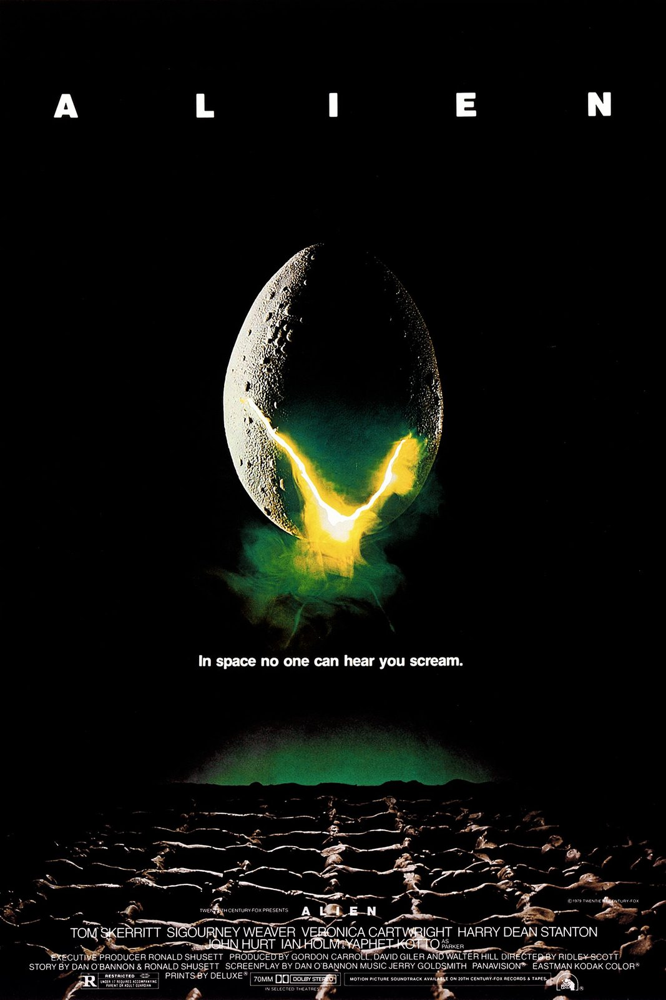
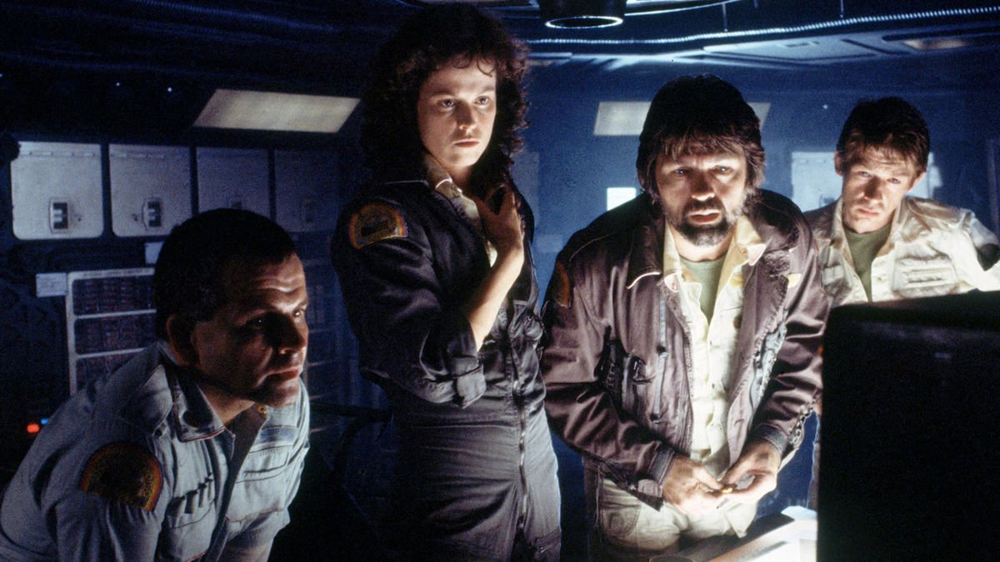

Celui-là, c'est encore une cassette enregistrée par mon père.
Je devais avoir dix ou onze ans. Un soir, il avait enregistré Alien à la télévision, et on l'a regardé ensemble.
Je me souviens surtout d'une scène. L'équipage est réuni autour de la table pour le petit-déjeuner. On rit, on mange, on se détend enfin. Et puis l'un d'eux se met à tousser, à se tordre de douleur, et quelque chose sort de son ventre.
Je n'avais jamais rien vu de pareil.
Il y avait aussi ces décors. Les couloirs étroits du vaisseau, les machines, l'obscurité, la vapeur, et ce vaisseau extraterrestre géant, comme fossilisé. Tout semblait réel, palpable, à couper le souffle.
Je l'ai revu récemment. Plus de quarante ans après sa sortie, Alien n'a pas pris une ride.
Ce soir, on ouvre la saga par le commencement.

Alien — affiche originale, 1979
Alien, le huitième passager.
1979. Réalisé par Ridley Scott. Avec Sigourney Weaver, Tom Skerritt, John Hurt, Ian Holm, Yaphet Kotto, Harry Dean Stanton et Veronica Cartwright.
Dans un futur lointain, le Nostromo, un vaisseau de transport commercial, rentre vers la Terre avec sa cargaison et ses sept membres d'équipage endormis. Un signal inconnu, venu d'une planète isolée, les réveille. En allant l'explorer, ils ramènent à bord quelque chose qui n'aurait jamais dû quitter cette planète.
Sur l'affiche, une seule phrase, devenue l'une des plus célèbres du cinéma : « Dans l'espace, personne ne vous entend crier. »
Le scénario est signé Dan O'Bannon, à partir d'une histoire écrite avec Ronald Shusett. La créature est imaginée par l'artiste suisse H. R. Giger, et elle ne ressemble à rien de ce que le cinéma avait montré jusque-là.
Alien n'est pas un film de science-fiction comme les autres. C'est un film d'horreur qui se déroule dans l'espace, un huis clos où sept personnes ordinaires, des employés et non des héros, affrontent une menace qu'elles ne comprennent pas.
Et au milieu de cet équipage se trouve une officière dont personne ne soupçonne encore qu'elle deviendra l'une des grandes héroïnes de l'histoire du cinéma : Ellen Ripley.
C'est le point de départ d'une saga unique. Quatre films, quatre réalisateurs, et à chaque fois, une vision différente du même cauchemar.
Au milieu des années 70, Dan O'Bannon est un jeune scénariste qui sort d'une aventure ratée. Il vient de passer des mois à Paris sur l'adaptation de Dune par Alejandro Jodorowsky, un projet démesuré qui ne verra jamais le jour. Mais il en revient avec des rencontres décisives, parmi lesquelles un peintre suisse aux visions cauchemardesques, H. R. Giger.
Avec son ami Ronald Shusett, il écrit une histoire simple : un équipage, un vaisseau, une créature à bord. Le script atterrit chez Brandywine, la société de Walter Hill, David Giler et Gordon Carroll, qui le retravaillent en profondeur.
En 1977, Star Wars triomphe, et la 20th Century Fox cherche à tout prix de nouveaux films de science-fiction. Alien obtient son feu vert.
Pour le réaliser, la Fox choisit un Anglais venu de la publicité : Ridley Scott. Il n'a qu'un seul long métrage derrière lui, Les Duellistes, mais un sens de l'image hors du commun. Il dessine lui-même une grande partie du storyboard et imagine un vaisseau qui ressemble à une usine flottante, sale, usée, loin des décors immaculés de la science-fiction de l'époque.
Il insiste aussi pour confier la créature à H. R. Giger. Inspirée de ses tableaux, la bête mêle l'organique et le mécanique dans un style qu'on n'avait jamais vu au cinéma. Dans le costume se glisse Bolaji Badejo, un étudiant nigérian de plus de deux mètres.
Un détail du scénario change tout : les rôles de l'équipage sont écrits sans préciser s'il s'agit d'hommes ou de femmes. Le rôle principal revient à une actrice presque inconnue, Sigourney Weaver.
Le tournage se déroule en Angleterre, aux studios de Shepperton, pour un budget d'environ onze millions de dollars. Pour la scène du repas, Scott ne révèle pas aux acteurs tous les détails de ce qui va se passer. Leurs réactions de stupeur, à l'écran, sont en grande partie authentiques.
La musique est confiée à Jerry Goldsmith. Alien sort aux États-Unis en mai 1979, et à la rentrée en France. Il remportera l'Oscar des meilleurs effets visuels.

L'équipage du Nostromo, autour de Ripley (Sigourney Weaver)
Quelque part dans l'espace, le Nostromo rentre vers la Terre. C'est un remorqueur commercial qui tire derrière lui une immense raffinerie et des tonnes de minerai. À bord, sept membres d'équipage dorment en hibernation.
L'ordinateur de bord, qu'ils appellent « Maman », les réveille plus tôt que prévu. Il a capté un signal venu d'une petite planète inconnue. Le contrat de leur compagnie est formel : tout signal de ce type doit être examiné.
L'équipage n'a rien d'héroïque. Ce sont des employés fatigués qui pensent surtout à leur prime et à leur retour. Ils se posent pourtant sur la planète, dans un paysage de tempête et de roche noire.
Trois d'entre eux partent explorer. Ils découvrent l'épave d'un vaisseau gigantesque, d'une architecture qui ne ressemble à rien de connu. À l'intérieur, une salle plongée dans la brume, et des centaines d'œufs.
L'un des explorateurs revient à bord, gravement blessé. Pour le sauver, l'équipage enfreint la quarantaine. C'est une décision que l'officière Ellen Ripley conteste, sans être écoutée.
Peu à peu, le Nostromo devient un piège. Une créature inconnue se cache dans les conduits, les coursives et l'obscurité. Elle grandit, elle chasse, et elle ne laisse aucune chance à ceux qu'elle croise.
Sept personnes ordinaires, un vaisseau isolé à des millions de kilomètres de la Terre, et une question qui ne les quitte plus : comment survivre à ce qu'on ne comprend pas ?
Alien repose sur une idée simple, que Ridley Scott pousse jusqu'au bout : ce qu'on ne voit pas fait plus peur que ce qu'on voit.
La créature n'apparaît presque jamais en entier. On en devine une silhouette, une queue, une mâchoire qui surgit de l'ombre. Scott filme les couloirs, les conduits, les recoins sombres du vaisseau, et laisse le spectateur imaginer le reste. Le film est lent, presque silencieux pendant sa première partie, et c'est justement cette patience qui rend chaque apparition terrifiante.
Les décors sont l'autre grande force du film. Le Nostromo n'a rien d'un vaisseau de rêve. C'est une usine flottante, sale, encombrée, avec des tuyaux qui fuient, des écrans qui grésillent et des coursives où l'on se sent à l'étroit. On y croit d'emblée, parce que tout semble usé, construit, habité. En face, le vaisseau extraterrestre imaginé par H. R. Giger est l'exact opposé : organique, monumental, presque vivant. Ce contraste donne au film une identité visuelle unique, qui n'a pas vieilli d'un jour.
Et puis il y a la scène du repas. En quelques secondes, le film bascule. L'équipage rit, se détend, partage un moment ordinaire, et l'horreur surgit de l'intérieur même de l'un d'eux. C'est l'une des scènes les plus célèbres de l'histoire du cinéma, parce qu'elle frappe là où on ne s'y attend pas : dans le corps, au milieu du quotidien.
Les personnages renforcent ce réalisme. Ce ne sont ni des soldats ni des scientifiques héroïques, mais des travailleurs qui parlent de leurs salaires et se chamaillent. Le casting, porté par des acteurs solides comme Tom Skerritt, John Hurt, Ian Holm ou Harry Dean Stanton, rend chacun crédible et vulnérable. On ne sait jamais qui va survivre.
Au cœur de tout cela émerge Ellen Ripley. Elle n'est pas présentée comme l'héroïne. Elle devient l'héroïne parce qu'elle est la plus lucide, la plus tenace, celle qui refuse de céder. Sigourney Weaver donne au personnage une force sans artifice, et l'histoire du cinéma d'action et de science-fiction en sera durablement changée.
Alien n'est pas seulement un film de monstre. C'est une mécanique de peur parfaite, où le décor, le son, le rythme et les personnages travaillent ensemble pour enfermer le spectateur avec l'équipage, à des millions de kilomètres de toute aide.
Pour cette saga, c'est aussi la première vision. Celle de Ridley Scott : l'horreur pure, le silence et l'ombre.

Dans l'épave extraterrestre, la salle des œufs
Alien n'a jamais été oublié. Mais il n'est pas devenu un classique du jour au lendemain.
À sa sortie, en 1979, le film est un succès en salles : plus de cent millions de dollars de recettes dans le monde pour un budget d'environ onze millions. La critique, elle, est plus partagée. Certains saluent sa mise en scène et sa tension. D'autres n'y voient qu'un film de monstre de série B, habillé de beaux décors.
C'est le temps qui lui a donné raison.
Alien a d'abord changé la science-fiction elle-même. Avant lui, l'espace était propre, lumineux, héroïque. Après lui, il devient sale, sombre, industriel. Les vaisseaux usés, les couloirs encombrés, les machines qui fuient : cette esthétique d'un futur abîmé inspirera des dizaines de films, et Ridley Scott la prolongera lui-même trois ans plus tard avec Blade Runner.
Il a ensuite imposé une créature unique. La bête de H. R. Giger est devenue l'un des monstres les plus reconnaissables de l'histoire du cinéma, imitée, parodiée, copiée à l'infini.
Il a surtout révélé Ellen Ripley. En 1979, voir une femme ordinaire devenir la survivante, la combattante, le cœur du film, n'avait rien d'une évidence. Ripley ouvre la voie à des personnages comme Sarah Connor, qu'on a vue à l'épisode précédent de SOMEDAY.
Enfin, Alien a donné naissance à une saga entière. Trois suites, chacune confiée à un réalisateur différent, puis des préquelles et de nouveaux films jusqu'à aujourd'hui. Tous reviennent à la même source : ce vaisseau, cet équipage, cette créature.
Le film est aujourd'hui inscrit au registre national du film de la Bibliothèque du Congrès américain, parmi les œuvres jugées essentielles à préserver.
Un film de monstre devenu une référence absolue, parce qu'il a tout inventé en même temps.
Parce qu'on croit le connaître sans l'avoir vraiment revu.
Tout le monde a en tête la créature, la phrase de l'affiche, la scène du repas. Mais revoir Alien en entier, aujourd'hui, c'est redécouvrir un film d'une patience rare. Ridley Scott prend son temps. Il installe le vaisseau, l'équipage, le silence, et ne lâche la menace qu'au compte-gouttes. À l'heure des films qui enchaînent les effets sans respirer, cette lenteur maîtrisée paraît presque audacieuse.
Parce que ses décors n'ont pas pris une ride. Les coursives du Nostromo, l'épave extraterrestre, la salle des œufs plongée dans la brume : tout a été construit, éclairé, filmé pour de vrai. On sent le métal, la vapeur, la chaleur des machines. C'est exactement ce qui m'avait coupé le souffle à dix ans, et c'est toujours aussi saisissant.
Parce que la scène du repas n'a rien perdu de sa force. Même quand on sait ce qui va arriver, la tension monte, et le choc fonctionne encore.
Parce que, revu adulte, le film parle aussi d'autre chose. Derrière le monstre, il y a la compagnie qui emploie l'équipage, qui l'envoie au danger et pour qui ces hommes et ces femmes comptent moins que la cargaison. Alien est aussi un film sur des travailleurs sacrifiés, et cette lecture le rend encore plus moderne.
Et parce que c'est le point de départ de toute une saga. Revoir Alien, c'est comprendre d'où viennent Aliens, le retour, Alien 3 et Alien, la résurrection. Chaque réalisateur qui suivra devra se mesurer à ce premier film, à ce vaisseau et à cette créature.
C'est la première vision de la saga. Et peut-être la plus pure.
Alien n'a pas cherché à être un classique. Il voulait seulement faire peur.
Un vaisseau, sept personnes ordinaires, une créature dans l'ombre. Ridley Scott a pris cette histoire simple et en a fait une mécanique parfaite, où chaque couloir, chaque bruit, chaque silence compte. Plus de quarante ans plus tard, elle fonctionne toujours.
Tout le monde connaît la phrase de l'affiche : « Dans l'espace, personne ne vous entend crier. »
Mais moi, ce dont je me souviens, c'est d'un soir à la maison, avec mon père. Une cassette qu'il avait enregistrée à la télévision. J'avais dix ou onze ans, et je ne savais pas encore que je regardais l'un des plus grands films de science-fiction jamais tournés.
Je savais seulement que ce vaisseau avait l'air vrai. Que cet équipage aurait pu être n'importe qui. Et que ce repas, autour de la table, ne ressemblait à aucun autre.
Je l'ai revu récemment. Les décors m'ont coupé le souffle exactement comme la première fois. Le film n'a pas pris une ride.
Il y a des films qu'on découvre et d'autres qui nous découvrent. Celui-là m'a appris qu'on pouvait avoir peur dans un fauteuil, et en redemander.
C'était la première vision. Trois autres réalisateurs allaient ensuite s'emparer du même cauchemar.
La cassette est dans le lecteur. On rembobine.
Titre original
Alien
Pays
Royaume-Uni · États-Unis
Genre
Science-fiction / Horreur
Durée
117 min
Producteur
20th Century Fox · Brandywine
Avec aussi
John Hurt · Ian Holm · Harry Dean Stanton
Créature
H. R. Giger
Fil conducteur
Saga Alien — Première vision : Ridley Scott
SOMEDAY — SAGA ALIEN EP. 01